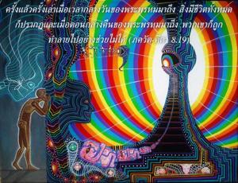
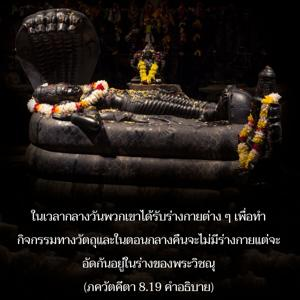
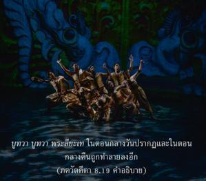
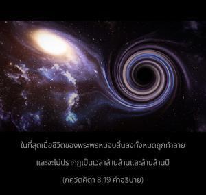

เมื่อเวลากลางวันของพระพรหมมาถึงสิ่งมีชีวิตทั้งหมดก็ปรากฏครั้งแล้วครั้งเล่า และเมื่อตอนกลางคืนของพระพรหมมาถึงพวกเขาก็ถูกทำลายไปอย่างช่วยไม่ได้




คนด้อยปัญญาพยายามจะอยู่ภายในโลกวัตถุนี้และอาจพัฒนาไปถึงดาวเคราะห์ที่สูงกว่า จากนั้นต้องกลับลงมาที่โลกนี้อีกครั้งหนึ่ง ในเวลากลางวันของพระพรหมพวกเขาสามารถทำกิจกรรมต่างๆในดาวเคราะห์เบื้องสูงและเบื้องต่ำภายในโลกวัตถุนี้ แต่เมื่อเวลากลางคืนของพระพรหมมาถึงทั้งหมดก็จะถูกทำลาย ในเวลากลางวันพวกเขาได้รับร่างกายต่างๆเพื่อทำกิจกรรมทางวัตถุ และในตอนกลางคืนจะไม่มีร่างกายแต่จะอัดกันอยู่ในร่างของพระวิษณุ จากนั้นก็จะปรากฏออกมาอีกครั้งหนึ่ง เมื่อเวลากลางวันของพระพรหมมาถึง ภูตฺวา ภูตฺวา ปฺรลียเต ในตอนกลางวันปรากฏและในตอนกลางคืนถูกทำลายลงอีก ในที่สุดเมื่อชีวิตของพระพรหมจบสิ้นลงทั้งหมดถูกทำลาย และจะไม่ปรากฏเป็นเวลาล้านล้านปี และเมื่อพระพรหมเกิดขึ้นอีกครั้งหนึ่งในอีกยุคหนึ่งพวกเขาก็ปรากฏขึ้นใหม่ เช่นนี้สิ่งมีชีวิตถูกทำให้หลงด้วยมนต์ขลังแห่งโลกวัตถุ แต่ผู้มีปัญญาจะรับเอากฺฤษฺณจิตสำนึกมาปฏิบัติและใช้เวลาของชีวิตมนุษย์อย่างเต็มที่ในการอุทิศตนเสียสละรับใช้ต่อองค์ภควานฺ ด้วยการสวดภาวนา หเร กฺฤษฺณ หเร กฺฤษฺณ กฺฤษฺณ กฺฤษฺณ หเร หเร / หเร ราม หเร ราม ราม ราม หเร หเร ดังนั้นแม้ในชีวิตนี้พวกเขาจะย้ายตนเองไปยังดาวเคราะห์ทิพย์ขององค์กฺฤษฺณ และมีความปลื้มปีติสุขชั่วกัลปวสาน ณ ที่นั้นโดยไม่ถูกบังคับให้กลับมาเกิดอีก